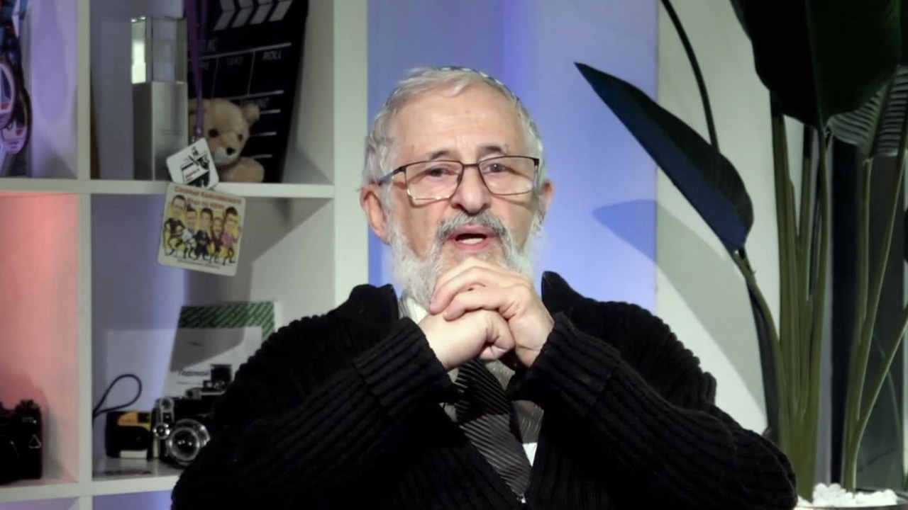

Владимир Гордин
Профессор-исследователь ВШЭ и МФТИ
Этот разговор стал главой книги
«Дух лицея и математика, которая служит людям» — личное обращение героя к читателю, цитаты,
опоры и блок «Возьми с собой».
Читать главу →
Читать главу →

01О герое
Профессор-исследователь ВШЭ и МФТИ — истории старой школы: как Колмогоров нашёл ученика в гардеробе Ленинской библиотеки, и почему в новом кампусе «придётся хорошо работать».
02Ключевые тезисы
- Сильная школа — это не только программа, но и атмосфера, наставники и дух лицея.
- Наука живёт цепочкой: учитель передает ученику не только знания, но и способ думать.
- Математика имеет прямое прикладное значение для безопасности, прогноза, энергетики и городского хозяйства.
- Молодежь приходит в науку через живой пример, спортивный азарт и уважение к задаче.
- Онлайн может расширить доступ к сильной науке, но не заменит личного желания учиться.
03Возьми с собой
Что применить
Ищи не только знания, но и среду, где люди горят своим делом.
Смотри на наставника не как на должность, а как на человека, у которого можно научиться способу думать.
Не жди счастливого случая: работай так, чтобы быть готовым, когда он появится.
Цитаты
Мне в своё время повезло: я учился в очень хорошей школе.
— Владимир Гордин
Дух лицея — это главный капитал образования.
— Владимир Гордин
Наука передается от человека к человеку.
— Владимир Гордин